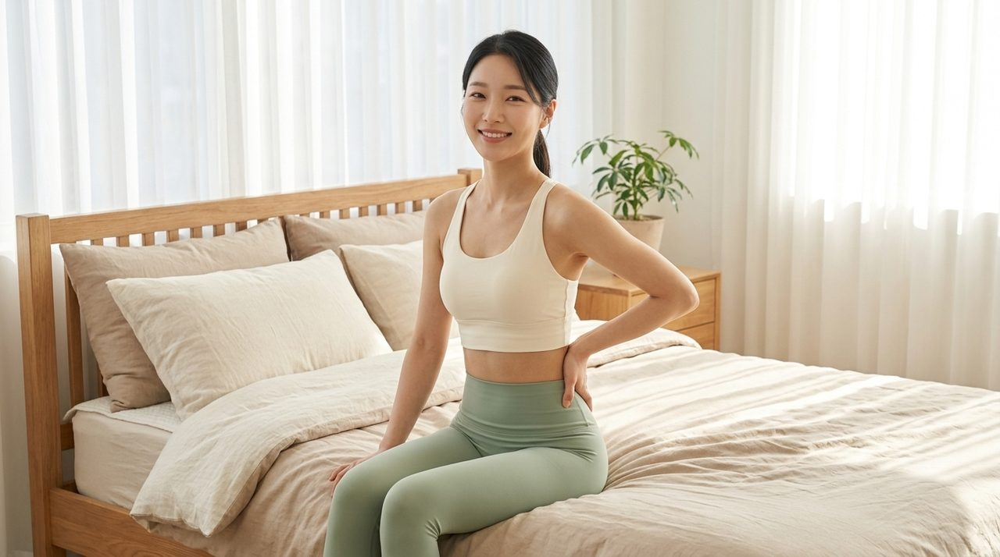
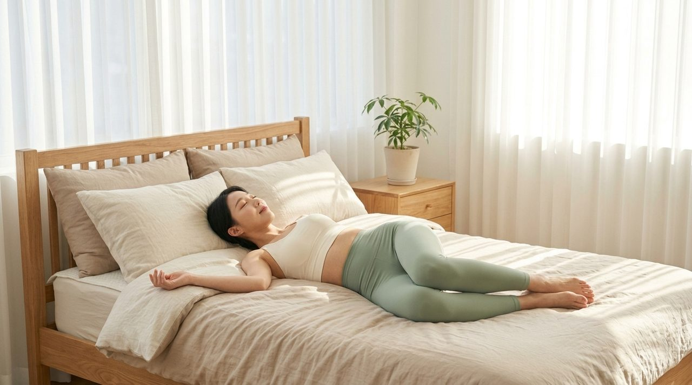
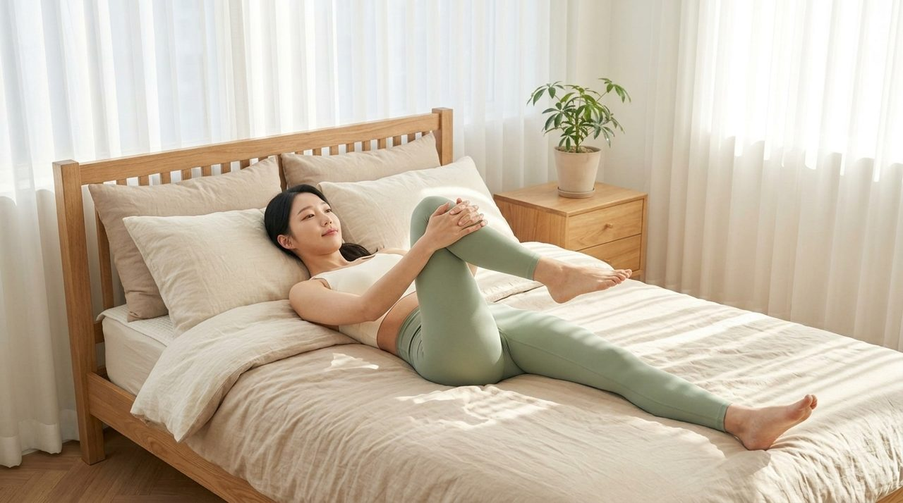
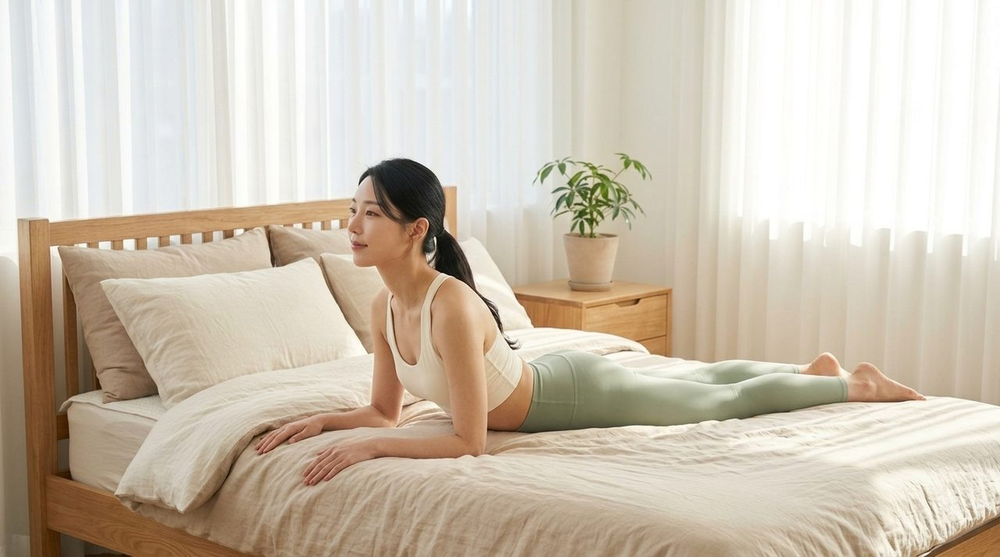
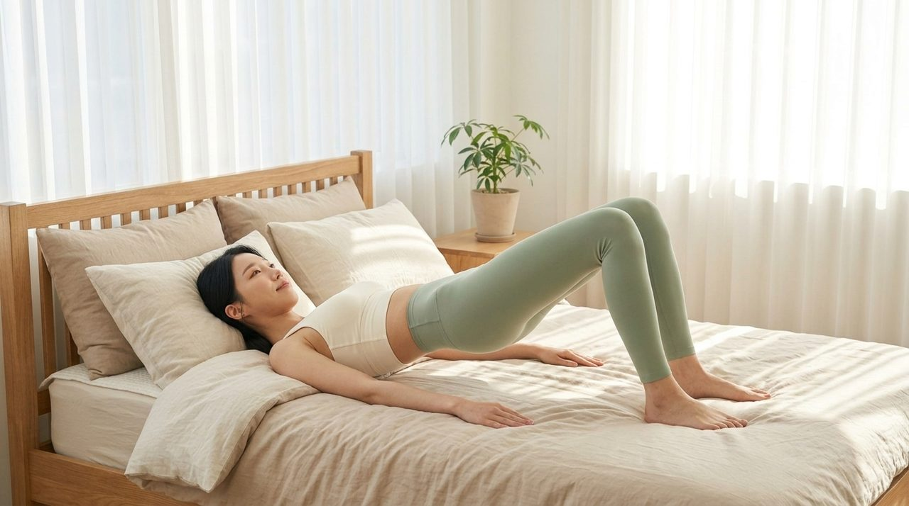

“아침마다 허리가 뻐근해 뒤척였다면?” 침대 위 5분 골반 교정 스트레칭
알람 소리에 눈을 떴을 때 허리 주변이 돌덩이처럼 무겁고 엉치 부근이 뻐근해 한참을 끙끙 앓다 일어난 경험이 있으실 것입니다.
낮 동안에는 멀쩡하다가도 유독 아침 기상 직후에 허리가 굳는 현상은 밤사이 척추와 골반 주변 근육이 수축한 상태에서 체중을 지탱하지 못해 나타나는 자연스러운 생리 반응입니다.
하지만 많은 분들이 이러한 묵직함을 풀기 위해 잠자리에서 벌떡 일어나 허리를 앞으로 푹 숙이거나 과격하게 좌우로 비트는 행동을 하곤 합니다.
체온이 떨어져 있고 관절액이 충분히 순환하지 않은 아침 시간대에 가해지는 급격한 하중은 요추 디스크 섬유륜에 불필요한 압박을 가하는 지름길이 될 수 있습니다.

아침 기상 시 유독 허리가 뻣뻣하고 뻐근하게 굳는 해부학적 배경
인체의 척추뼈 사이사이에 위치한 추간판(디스크)은 수면 시간 동안 중력의 압박에서 벗어나 주변의 수분을 머금으며 약간 팽창하는 특성을 지닙니다.
밤사이 수분을 머금어 팽팽해진 디스크는 기상 직후 척추 유연성이 일시적으로 낮아지게 만들며, 이것이 아침에 허리가 유독 뻣뻣하게 느껴지는 근본적인 이유입니다.
여기에 평소 좌식 생활로 인해 단축된 장요근과 대퇴직근이 누워 있는 동안 골반을 앞쪽으로 잡아당기면 요추 과전만이 형성됩니다.
골반이 틀어지고 허리 뒤쪽 기립근이 밤새 팽팽하게 긴장 상태를 유지하게 되면서, 아침에 첫발을 디딜 때 엉치와 허리에 둔탁한 신호가 전달되는 것입니다.
| 구분 | 주요 원인 및 작용 기전 | 신체에 미치는 긴장 상태 | 바람직한 아침 대처법 |
|---|---|---|---|
| 추간판 수분 팽창 | 수면 중 무중력 상태로 체액 흡수 | 척추 관절 유연성 일시적 감소 | 기상 직후 급격한 굴곡 동작 자제 |
| 장요근 단축 | 오랜 좌식으로 골반 전방 경사 | 요추 기립근 과긴장 및 허리 결림 | 누운 자세 무부하 이완 스트레칭 |
| 요추 추간공 협착 및 둔근 경직 | 수면 중 관절 굳어짐 및 자세 고정 | 요추 신경 압박 및 엉치 뻐근함 | 무릎 가슴 당기기 무부하 이완 |
허리를 무작정 앞으로 숙이는 스트레칭이 위험한 이유
허리가 뻐근할 때 서서 손끝을 발끝으로 뻗으며 허리를 깊게 숙이는 햄스트링 스트레칭을 시도하는 경우가 많습니다.
그러나 요추가 앞으로 굽혀지는 굴곡 동작은 팽팽해진 디스크 수핵을 뒤쪽 신경 방향으로 밀어내는 역학적 힘을 발생시킵니다.
전문 연구진의 생체역학 분석에 따르면, 서서 허리를 90도로 숙일 때 요추 4번과 5번에 가해지는 내압은 반듯이 누워 있을 때의 4배 이상으로 급증합니다.
따라서 아침 기상 직후의 스트레칭은 반드시 중력 부하가 고스란히 배제된 누운 자세(무부하 상태)에서 척추를 부드럽게 펴주는 신전 중심 동작으로 진행되어야 안전합니다.
중력 부담 없이 누워서 끝내는 4단계 골반 정렬 및 허리 이완 루틴
이 루틴은 침대에서 일어날 필요 없이 이불 위에서 5분 만에 완료할 수 있도록 구성된 과학적인 척추·골반 안정화 시퀀스입니다.
모든 동작은 호흡을 편안하게 유지하며 반동 없이 지그시 20~30초간 머무는 것이 핵심입니다.
1단계: 골반 좌우 시계추 스트레칭 (Knee Rolling)
침대에 반듯이 누워 양 무릎을 세우고 발바닥을 바닥에 둡니다.
양팔을 옆으로 편안하게 벌려 상체를 고정한 상태에서, 두 무릎을 붙인 채 오른쪽으로 천천히 넘겨 15초간 유지한 뒤 반대쪽으로 넘깁니다. 척추 마디마디의 긴장이 부드럽게 풀리는 것을 느낄 수 있습니다.

2단계: 무릎 가슴 당기기 요추 감압 (Single Knee-to-Chest)
편안하게 누운 상태에서 한쪽 무릎을 굽혀 양손으로 무릎 앞쪽을 부드럽게 감싸 쥡니다.
숨을 천천히 내쉬며 무릎을 가슴 쪽으로 지그시 당겨 20초간 유지합니다. 자는 동안 좁아졌던 요추 후관절 뼈 사이 간격(추간공)이 자연스럽게 벌어지며 짓눌려 있던 신경관을 감압하고, 대둔근의 과긴장을 안전하게 덜어냅니다.

3단계: 누운 자세 맥켄지 신전 (Prone Press-up)
침대에 엎드린 자세로 전환한 뒤, 양 팔꿈치를 어깨 바로 아래에 두고 바닥을 짚습니다.
상체를 30도 정도 부드럽게 들어 올리며 심호흡합니다. 배와 골반은 침대에 붙인 상태를 유지해야 하며, 척추 본래의 완만한 C자 곡선을 복원시켜 디스크 후방 압박을 덜어내는 정통 신전 운동입니다.

4단계: 골반 리셋 글루트 브릿지 (Glute Bridge)
다시 등을 대고 누워 무릎을 세우고 발을 골반 너비로 벌립니다.
발뒤꿈치로 바닥을 지그시 밀며 엉덩이를 들어 올려 무릎과 골반, 어깨가 완만한 대각선이 되도록 만듭니다. 정점에서 둔근을 단단히 수축해 5초간 유지한 뒤 천천히 내려옵니다. 늘어났던 골반을 견고하게 잡아주는 마무리 강화 동작입니다.

| 루틴 순서 | 운동 명칭 | 주요 자극 부위 | 권장 반복 및 시간 |
|---|---|---|---|
| 1단계 | 골반 좌우 시계추 스트레칭 | 요추 분절 회전근, 요방형근 | 좌우 각 15초 × 3회 |
| 2단계 | 한쪽 무릎 가슴 당기기 | 요추 후관절, 대둔근, 척추기립근 | 좌우 각 20초 × 2회 |
| 3단계 | 맥켄지 엎드린 신전 동작 | 요추 C자 만곡, 복직근 | 심호흡 5회 유지 × 3회 |
| 4단계 | 골반 리셋 글루트 브릿지 | 대둔근, 햄스트링, 척추 기립근 | 5초 유지 10회 반복 |
생활 속에서 골반 비대칭과 요추 과전만을 예방하는 바른 자세 수칙
아침 스트레칭으로 척추와 골반을 정렬해 두었더라도, 일상에서 잘못된 자세가 반복되면 골반은 다시 본래의 비틀린 위치로 회귀하려는 성질을 보입니다.
무엇보다 경계해야 할 생활 습관은 의자에 앉았을 때 다리를 꼬거나, 한쪽 엉덩이에만 체중을 싣는 짝다리 습관입니다.
의자에 앉을 때는 엉덩이를 등받이 깊숙이 밀어 넣고 양 발바닥이 지면에 온전히 닿도록 높낮이를 조절해야 합니다.
또한 50분마다 한 번씩 자리에서 일어나 가볍게 기지개를 켜며 장요근의 긴장을 덜어주는 작은 습관이 건강한 척추 정렬을 유지하는 든든한 밑거름이 됩니다.
- 아침 기상 직후 허리가 뻣뻣한 현상은 밤사이 수분을 머금은 디스크와 굳어있던 골반 근육의 자연스러운 반응입니다.
- 갑작스럽게 허리를 숙이는 동작을 피하고, 누운 자세에서 무부하 시계추 및 맥켄지 신전 운동으로 부드럽게 깨워야 합니다.
- 아침 5분 스트레칭과 함께 다리 꼬기를 멈추고 바른 좌식 자세를 유지하는 습관이 허리 컨디션을 지키는 핵심입니다.
#허리통증 #골반교정 #허리스트레칭 #아침스트레칭 #골반교정스트레칭 #허리디스크운동 #맥켄지운동 #글루트브릿지 #침대스트레칭 #홈트레이닝